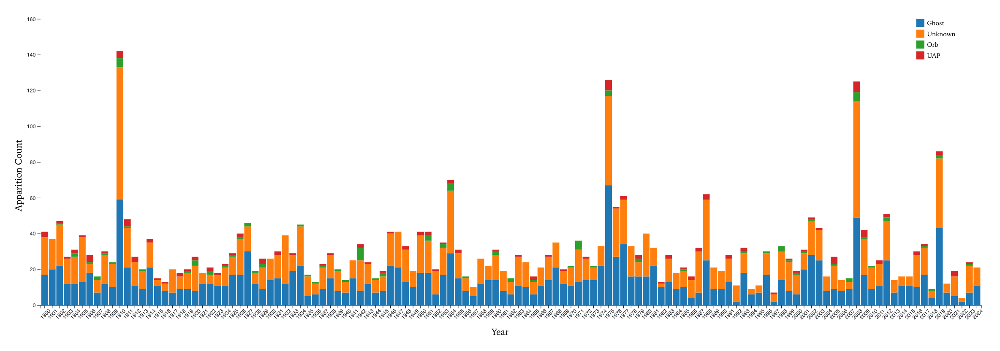
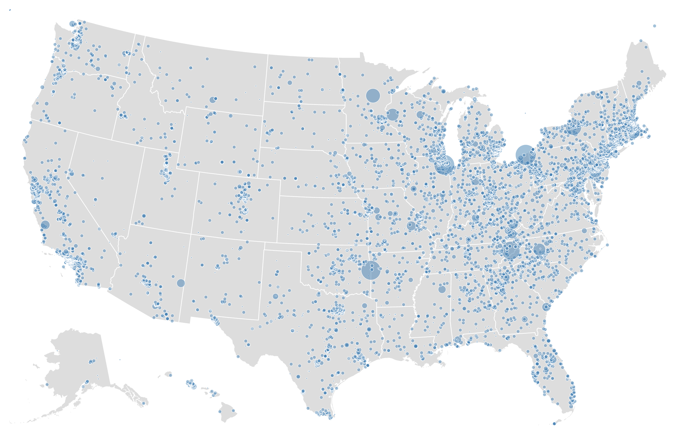
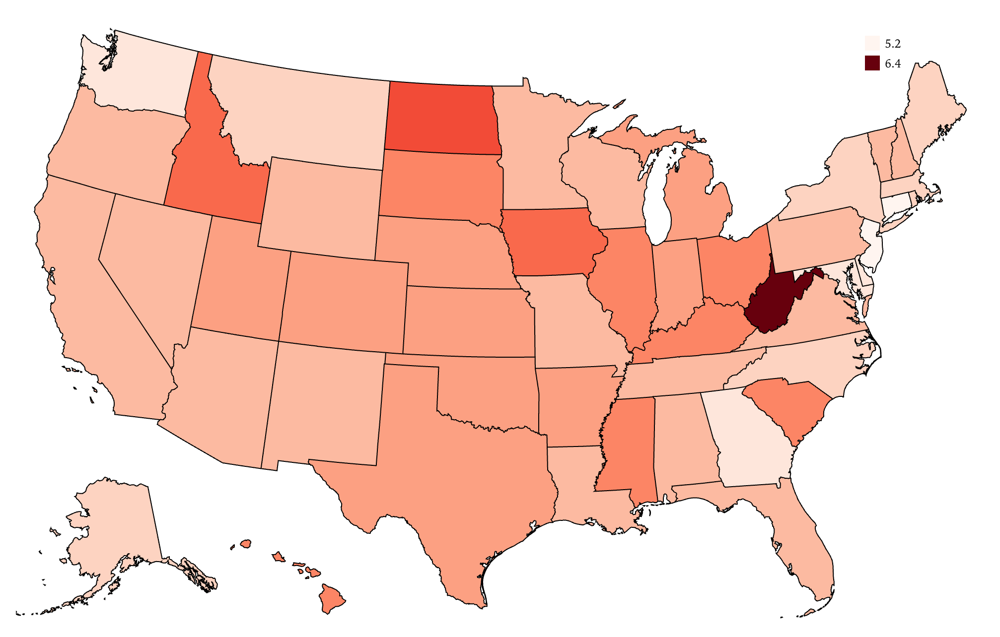

Trends in Apparition Types Over Time (1900 - 2024)

Description
This bar chart provides a comparison of different apparition types (Ghost, Unknown, Orb, and UAP) reported over time, spanning from 1900 to 2024. Each bar represents a year, with the color segments indicating the count of each apparition type. The chart highlights periods of increased activity, with notable spikes in specific years, particularly in the late 20th century. This visualization allows for easy identification of trends in the frequency of various apparition types, offering insights into patterns and anomalies over time.
Visualization 2
.mp4)
Description
Add your visualization description here.
Alcohol Deaths Per Capita by State (Heatmap)

Description
This heatmap visualization displays the variation in alcohol-related deaths per capita across U.S. states. The darker shades indicate higher rates of alcohol deaths, while lighter shades show lower rates. This map provides insights into regional disparities in alcohol consumption and its impact on public health, highlighting areas like West Virginia and North Dakota with the highest rates of alcohol-related deaths.
Geographical Distribution of Haunted Places by Witness Count

Description
This scatter plot map shows the geographical distribution of haunted places across the U.S., with the size of the circles representing the number of witnesses to each haunting. Larger circles indicate areas with more reported sightings, which may suggest more credible or well-known hauntings. The map highlights the northeastern and midwestern regions, which show a higher concentration of haunted place reports, providing valuable insights into the regions with the most frequent paranormal activities.
Visualization 5

Description
Add your visualization description here.